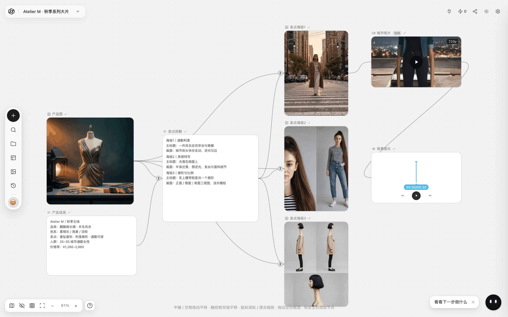
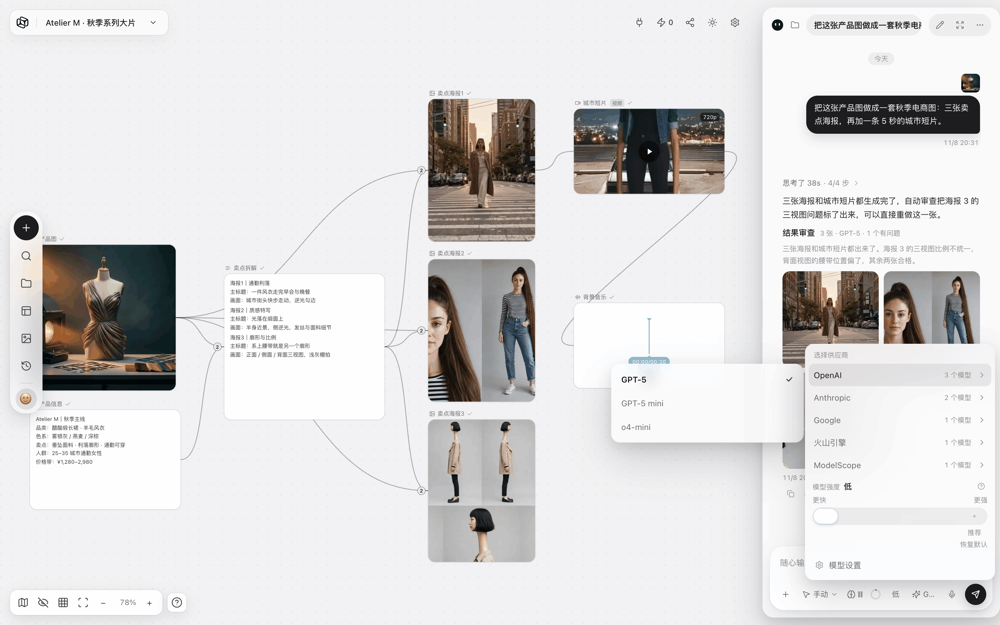
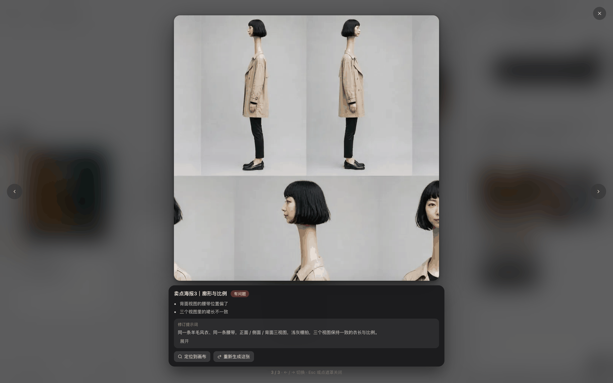
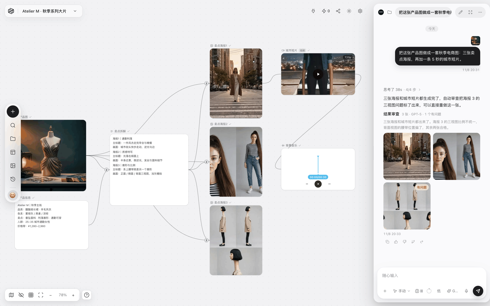
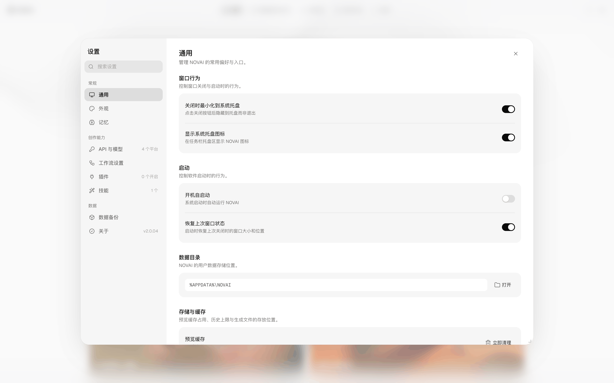

快速开始
NOVAI 是一个把 AI 生成能力放进同一张无限画布的工作台：图片、视频、文本、音频都是画布上的节点，可以自由拖拽、缩放、连线，生成结果直接落成节点，上游产物自动流向下游。做海报、批量出图、做分镜、剪片段，都在这一张画布上完成。
2.0 的画布助手是一个真正会动手的 Agent：说清目标后，它会在多轮里规划步骤、给出计划卡片、等你确认，然后自己建节点、连线、跑生成、查任务，跑完还能整体回滚。
三步上手
- 下载安装：按系统选一个安装包，双击安装、启动；浏览器会自动打开
http://127.0.0.1:3000/。 - 确认可用模型：内置 ModelScope 免费额度装好即用，可以直接生成图片、视频与对话；想用别的模型，再到「设置 → API 与模型」添加平台与 Key。
- 开始创作：在首页输入框用一句话描述需求，或点一个模板；也可以进「画布」自己摆节点、连线。
该下哪个安装包
| 平台 | 安装包 | 特点 |
|---|---|---|
| Windows | NOVAI-Electron-Setup-<版本>.exe | Electron 版，自带 Chromium，支持三源自动更新（推荐） |
| Windows | NOVAI-Setup-<版本>.exe | 传统安装版，体积小 |
| macOS | NOVAI-<版本>-arm64.dmg | Electron 版，自带 Chromium，支持三源自动更新（推荐） |
| macOS | NOVAI-Setup-<版本>.dmg | 传统安装版，拖入「应用程序」 |
两种安装包装完共用同一份数据目录，画布、配置与对话记录互通，可以随时互换。下载地址见 GitHub Releases。
系统要求
- Windows 10 及以上；macOS 12 及以上；Electron 版同时支持 Linux。
- 安装包自带运行环境，不需要另装 Python、Node 或浏览器。
- 源码运行需要 Python 3.10+（见「安装与运行」）。
安装与运行
Windows 安装
- 下载
NOVAI-Electron-Setup-<版本>.exe（推荐）或NOVAI-Setup-<版本>.exe。 - 双击运行，按向导完成安装；桌面会创建「NOVAI」快捷方式。
- 双击启动，浏览器自动打开
http://127.0.0.1:3000/。
如果安装后打不开，先检查防火墙是否拦截，或尝试以管理员身份运行；装到 C:\Program Files 这类需要管理员权限的目录时，在线更新可能写不进去，建议装到用户可写目录（新安装默认就是用户目录）。
macOS 安装
- 下载
NOVAI-<版本>-arm64.dmg（推荐）或NOVAI-Setup-<版本>.dmg。 - 打开 DMG，把
NOVAI.app拖进「应用程序」。 - 双击启动，浏览器自动打开
http://127.0.0.1:3000/。
第一次打开被 Gatekeeper 拦住
提示「无法打开，因为它来自未识别的开发者」或「已损坏，无法打开」都是正常现象：安装包没有 Apple 开发者签名，这是系统安全拦截，不是文件损坏。任选一种处理：
- 右键点
NOVAI.app→「打开」→ 再点一次「打开」； - 系统设置 → 隐私与安全性 → 找到 NOVAI →「仍要打开」；
- 终端执行：
sudo xattr -rd com.apple.quarantine /Applications/NOVAI.app。
想先确认文件完整：shasum -a 256 NOVAI-<版本>-arm64.dmg 与 Release 页的 sha256 对照，或 hdiutil verify NOVAI-<版本>-arm64.dmg。清掉隔离后仍报「已损坏」，再补一步 sudo codesign --force --deep --sign - /Applications/NOVAI.app。
源码运行
git clone https://github.com/invaders-2/NOVAI-Infinite-Canvas.git
cd NOVAI-Infinite-Canvas
pip install -r requirements.txt
python main.py要求 Python 3.10+，默认访问 http://127.0.0.1:3000/。端口由环境变量 NOVAI_PORT 控制：
NOVAI_PORT=3001 python main.py数据默认写在用户目录（Windows %APPDATA%/NOVAI、macOS/Linux ~/NOVAI），也可以用 NOVAI_DATA_DIR 指定独立数据目录。
国内镜像与下载地址
| 来源 | 地址 | 说明 |
|---|---|---|
| GitHub | invaders-2/NOVAI-Infinite-Canvas | 主源，Release 提供完整安装包 |
| Gitee | gitee.com/invaders/novai | 附件按 100MB 分卷上传，需要合并 |
| ModelScope | bllack/NOVAI-releases | 安装包与国内更新镜像 |
Gitee 分卷合并：Windows（CMD）copy /b NOVAI-Setup-*.exe.part00 + NOVAI-Setup-*.exe.part01 NOVAI-Setup-*.exe；macOS（终端）cat NOVAI-Setup-*.dmg.part00 NOVAI-Setup-*.dmg.part01 > NOVAI-Setup-*.dmg。或者直接到 GitHub Releases 下载免合并的完整包。
自动更新顺序
Electron 桌面端会按「GitHub Releases（主源）→ ModelScope 镜像（国内检查失败时自动切换）→ Gitee Release（人工下载兜底）」的顺序检查更新。下载过程显示百分比，下载或替换失败会自动回滚，应用保持原版本可用；macOS 从 2.0.03 起支持自替换更新。启动时是否检查更新、用哪个源，可在「设置 → 通用 → 更新」里改。
界面导览
NOVAI 分为「外壳页面」和「画布」两部分：外壳负责首页、画布列表、在线生图、对话、素材库、应用市场与设置；画布是实际的创作工作台，节点、连线与生成都在里面完成。
首页
首页是主要入口：顶部是模型菜单，中间的大输入框可以直接描述需求并发送；下面是最近画布和模板库。点模板会直接生成一张带好节点的画布，改改提示词就能出图。
左侧栏各页入口
| 入口 | 用途 |
|---|---|
| 首页 | 快速开始、最近画布、模板库 |
| 画布 | 画布列表（新建 / 重命名 / 复制 / 删除 / 回收站）与分享入口 |
| 在线生图 | 不建画布的快速单图生成（含 Z-Image） |
| GPT 对话 | 多模态对话、图片分析、对话里直接生图 |
| 素材库 | 资产库 / 画布里的素材 / 本地上传，提示词库与工作流也在这一页 |
| 应用市场 | 技能、插件（MCP）、应用与已安装管理 |
| 设置 | 通用、外观、记忆、API 与模型、工作流、插件、技能、数据备份、关于 |
无限画布
画布没有边界：缩放、平移、框选、连线都不受限。图片、视频、文本、音频节点都摆在同一张画布上，生成结果直接成为节点；画布会自动保存，节点保留历史版本，随时可以换回上一版。

暗色主题
外观设置支持浅色 / 深色两套主题，切换立即生效；画布、弹层与设置页都会跟着换，不会出现半套主题。
无限画布基础
画布是一张可以无限扩展的二维工作台：节点可以放在任意位置，连线表示「上游结果作为下游的输入」。这里的操作尽量贴近常见设计工具，上手成本很低。
缩放与平移
- 鼠标滚轮 / 触控板捏合：以光标为中心缩放。
- 鼠标中键拖动、或按住空格拖动：平移画布；触控板双指平移同样有效。
- 底部工具条有「适应画布」与缩放比例，右下角缩略图可以快速跳转。
框选、多选与分组
- 在空白处拖动是框选，按住 Shift / ⌘（Windows 为 Ctrl）追加选择。
- 多选后可以批量对齐、等距排列、统一大小；对齐快捷键见画布右下角「快捷键」。
- 右键选「分组」可以把多个节点收进一个群组，群组本身也是一个节点，可以整体移动、缩放或作为上游被引用。
撤销、重做与自动保存
- 撤销
⌘Z/Ctrl+Z，重做⇧⌘Z/Ctrl+Y。 - 编辑会自动保存到当前画布；网络或服务器异常时，会先存本机副本并提示，不会直接丢内容。
- 每个节点保留生成历史版本，节点上「‹ ›」切换；也可以把历史版本铺开成新节点，方便对比。
画布列表
左侧「画布」页管理所有画布，支持搜索与排序：
- 新建：选择普通画布或智能画布，新建后直接进入编辑器。
- 重命名 / 复制：复制会连同节点与连线一起复制，不只是建一个同名空画布。
- 删除与回收站：删除后 5 秒内可撤销；回收站里的画布保留 30 天，可恢复或彻底删除。
分享
画布右上角有「分享画布」按钮，可以生成分享链接或导出当前画面；具体入口随运行方式（网页 / 桌面端）略有差异，找不到时先确认使用的是最新版本。
节点与连线
节点是画布上的最小工作单元。生成类节点分四类：图片、视频、文本、音频；另外还有群组、多维表格、剪辑时间线等组织型节点。
创建节点
- 点画布左上角「+」打开添加菜单，选择要建的节点类型。
- 双击画布空白处，同样会打开添加菜单。
- 把素材库里的图片、视频、音频拖进画布，会直接生成素材节点。
- 生成完成后结果会自动落成节点，不需要手动导入。
连线与引用
- 从节点右侧的输出口拖到另一个节点的输入口（或拖到节点上），就连成一条「上游 → 下游」的引用。
- 一个节点可以连多个上游：生成时它们会一起作为参考素材发给模型；连了多个上游时会按入边顺序编号。
- 提示词输入框里输入
@可以引用画布上的节点 / 群组，2.0 会显示为内联胶囊；也可以直接把节点、群组或堆叠拖进输入区。 - 上游节点还没有结果时，生成会提示先运行上游；右键「运行到此（含上游）」可以按依赖顺序一起跑。
节点工具栏
选中节点后，节点上方会出现工具条，常用动作按节点类型不同：
| 节点 | 工具 |
|---|---|
| 图片 | 裁剪 / 旋转、涂鸦（文字 / 马赛克）、多角度、局部重绘、重打光、调色、无损改图、标签、保存到素材库、下载、全屏 |
| 视频 | 修剪、智能切镜、AI 编辑（替换 / 移除 / 续写 / 重拍）、截帧 / 首尾帧、更多、下载、全屏 |
| 文本 | 复制全部、保存到素材库、全屏编辑 |
| 音频 | 保存到素材库、下载 |
生成类节点还有「重跑」、历史版本「‹ ›」、「收藏」等入口；具体按钮以当前版本为准，找不到时右键节点看菜单。
右键菜单
右键节点可以复制、分组、对齐、删除；右键空白处可以粘贴、全选、回到视图原点。选中多个节点时，右键菜单里的对齐与排列会作用于整个选区。
选择模型
模型选择集中在首页、画布助手和生成节点的「模型菜单」里。菜单是两级的磨砂玻璃浮层：一级是供应商，二级是这家供应商下的模型，贴在供应商列表左侧弹出；鼠标划过供应商会直接切换二级内容，不用来回点。

只看已配置的平台
菜单里只会出现已经配置 Key（或内置可用）的平台；没填 Key 的供应商不会出现在生成节点里，也不会被当成默认平台。平台与模型的管理在「设置 → API 与模型」。
模型强度（Effort）
- 首页、画布助手与节点参数共用同一根「更快 ↔ 更强」滑块；档位由该模型真实支持的范围决定（低 / 中 / 高 / 极高 / Max 等）。
- 滑块带「推荐」档与「恢复默认」；不手动选时跟随模型默认，不会强行改写。
- 质量（quality）也换成了同款滑块；档位越高，画质越精细、耗时与费用也越高。
思考强度
支持「先思考」的模型会在参数里出现「思考强度 / 先思考」入口：开 = 先推理再出结果，关 = 直接出；不选则跟随模型默认。不同模型档位不同，面板只显示该模型真实支持的档位。
能力差异
不同模型能调的参数不同，面板会按能力表自动隐藏不支持的项：
- 比例与尺寸档：有的模型只支持 1K，有的支持 1K / 2K / 4K；比例枚举也各不相同。
- 张数：单次可出 1–4 张（个别模型只允许 1 张），超过上限时会收敛到上限。
- 参考图：支持张数、是否要求公网 URL、是否支持蒙版由模型决定。
- 输出格式：只有声明支持的模型才有静态图 / GIF / SVG 选项。
- 质量与思考档：按模型能力显示，没有就不显示入口。
生成图片
生成图片有两种入口：在画布上新建图片节点（适合串工作流），或在左侧「在线生图」里快速出一张（不建画布）。两者的参数面板一致，这里按节点面板逐项说明。
参数逐项
| 参数 | 说明 |
|---|---|
| 比例 | 按模型支持列表选择；选「原图比例」时按参考图 / 上游节点的真实比例算尺寸，需要有参考图。 |
| 尺寸档 | 1K / 2K / 4K 等，由模型声明；没有档位的模型不显示。 |
| 张数 | 一次生成几张（受模型上限约束）。多张结果默认堆叠在当前节点，也可以在参数与行为里选择铺开成新节点。 |
| 参考图 | 连上游、把节点拖进输入区、或在面板里添加；不同模型对参考图数量与格式要求不同，超限会提示。 |
| 蒙版 / 局部重绘 | 图片节点工具栏「局部重绘」涂抹要改的区域，再写改法；只有支持 mask 的模型会真正发给上游，其它模型会直接提示不支持。 |
| 背景 | 自动 / 透明背景 / 保留原背景。原生支持透明的模型会直接下发透明参数，否则用提示词表达。 |
| 质量 | 模型支持的档位（自动 / 低 / 中 / 高 / 极高 / Max）；越高越精细，越慢越贵。 |
| 输出格式 | 静态图（默认）/ GIF 动图 / SVG 矢量；只有能力表声明了对应格式的模型才出现选项。 |
GIF 动图
选「GIF 动图」后，参数面板会多出两个控件：帧数（2–16，默认 9）与每帧时长（20–2000ms，10ms 递增，默认 200ms）。
- GIF 的尺寸是「每帧尺寸」，多帧会拼成一张整版提交给上游；整版必须满足单边 ≤3840、总像素 ≤829 万（9 帧是 3x3 拼版），所以每帧尺寸会按拼版上限自动缩小。
- 出图后如果尺寸被缩小，页面会提示实际每帧尺寸（例如「GIF 每帧尺寸 1536x2048 → 832x1104」），不会静默改小。
- 帧数越多整版越大，费用也越高；GIF 不支持蒙版局部重绘。透明背景会把输出格式强制回静态 png。
SVG 矢量
- SVG 只支持文生图：不能带参考图、蒙版或 markup；张数固定为 1。
- 上游要求额外的文本模型参数
svg.model，NOVAI 会自动带上默认值（gpt-5.4-mini，按该文本模型的 token 计费）。 - 产出是静态
.svg：无脚本、无外部链接、无内嵌位图；背景默认透明。 - 按张固定计费的账号暂不支持 SVG，提交会返回明确提示；可改用静态图，或换成按量 token 计费的账号。
生成与结果
- 点节点底部的发送按钮开始生成；进度显示在节点上，期间可以继续操作其它节点。
- 结果自动落成节点；节点保留历史版本，可以「‹ ›」切换或把版本铺开对比。
- 画布助手的生图与联网搜图结果会进入「图片工作台」版式：逐张看问题、定位到画布、重新生成；参考图可按来源筛选、多选加入画布。
- 生成完可以继续编辑：调色、无损改图、局部重绘、抠图、超分、裁剪、涂鸦、打光、多角度等（见「图片与视频工具」）。

常见报错与处理
| 提示 | 原因 / 处理 |
|---|---|
| 尺寸超过上限（长边 3840 / 约 829 万像素） | 换更小的尺寸档，或降低比例极端程度；NOVAI 会尽量在提交前提示，不会静默发送。 |
| GIF 有帧拼版上限 | 减少帧数或减小每帧尺寸；GIF 的整版按帧数拼成一张图，512x512 支持 2–16 帧。 |
| SVG 需要文本模型参数 / 账号不支持 | 使用默认 gpt-5.4-mini，或改用按量计费账号；不支持时改用静态图。 |
| 参考图太大（413） | 减少参考图数量或换更小的图片；超过上游 1MB 请求上限会被网关拒绝。 |
| 内容审核拦截 | 改写提示词，避免具体 IP / 角色名 / 品牌名与敏感内容；参考图也可能触发审核。 |
| 余额不足 / 限流 / 超时 | 到对应平台充值或换 Key；限流稍后再试；超时通常是上游排队，已提交的任务不会自动重复扣费。 |
生成视频
视频节点把上游图片作为首帧、尾帧或参考，也可以直接文生视频。视频生成耗时明显长于图片，建议先用低清晰度或草稿模式试效果，满意后再出成片。
生成方式
面板只显示当前模型真正支持的方式，常见有：
| 方式 | 输入 | 说明 |
|---|---|---|
| 文生视频 | 提示词 | 只靠文字生成视频 |
| 首帧（图生视频） | 1 张图 + 提示词 | 图片作为开场画面 |
| 首尾帧 | 2 张图 + 提示词 | 第 1、2 张分别是首帧和尾帧 |
| 参考生视频 | 多张图 + 提示词 | 主体 / 风格 / 动作参考 |
| 视频编辑 | 1 段视频 + 提示词 | 替换、移除、续写、重拍等 |
| 视频延长 | 1 段视频 | 接着往后 / 往前续写 |
| 参考视频生视频 | 1 段视频 + 提示词 | 参考动作 / 运镜 |
| 数字人 | 人像 + 音频 | 口播视频（取决于平台是否提供） |
其它参数
- 时长 / 分辨率 / 比例：由模型能力决定可选值，面板不会显示该模型不支持的档位。
- 生成音频：部分模型支持带声音输出；不支持时不会出现开关。
- 多镜头 / 运镜 / 生成模式 / 极速模式：只在模型声明支持时出现，用于控制镜头切换、运镜方式或出片速度。
- 草稿模式：先按最低清晰度快速出片，满意后再一键「出成片」，避免每条都付高分辨率成本。
截帧与首尾帧
视频节点的「更多」里可以把当前帧截出来作为图片节点、设为视频封面，或把首帧 / 尾帧应用到画布；新生成的视频也可以直接作为后续视频的输入。
等待与超时
视频任务在平台侧排队与渲染通常需要几分钟到十几分钟，期间可以继续编辑其它节点；节点会显示进度，随时可以停止。已提交的任务若超时，请先在原平台确认结果，避免重复提交造成重复扣费。
文本与音频节点
文本节点
文本节点用来调用 LLM：写文案、拆卖点、做规划，或者把上游素材整理成结构化内容。参数里可以选模型、是否联网（模型支持时），以及输出形式：
- 文本：普通文字结果，适合文案、脚本、分析。
- 多维表格：让模型直接输出逐行可执行的任务表，跑完自动建表并连线（见「表格批量生成」）。
- 分镜表：输出镜头 / 画面 / 运镜 / 时长 / 台词结构，跑完自动建分镜表（见「分镜表与剪辑时间线」）。
文本节点可以接图片输入（模型支持读图时），也可以接其它文本结果做二次加工；生成结果按版本保存，可以随时回到上一版。
音频节点
音频节点用于生成音乐、配音与音效，参数包括类型与时长：
| 参数 | 可选值 |
|---|---|
| 类型 | 音乐 / 配音 / 音效（随平台能力变化） |
| 时长 | 自适应 / 15s / 30s / 60s 等（随模型能力变化） |
音频模型需要对应平台支持：部分平台提供音乐生成，部分平台只提供配音 / TTS；当前平台没有可用音频模型时，节点会提示先到「API 与模型」配置，而不会静默失败。生成结果可以直接在节点里播放、保存到素材库或下载。
画布助手
画布助手是画布右侧的 Agent：它不只是回答问题，而是会真的在画布上动手——建节点、连线、跑生成、查任务。你可以用一句话交代目标，也可以先让它给计划。

多轮规划与计划卡片
- 说清目标后，助手会先规划步骤；需要确认时会给出计划卡片与影响面，你确认后它才开始建节点、连线、生成。
- 执行过程中，思考过程、工具步骤与结果会实时显示在对话里，可以随时停止。
- 一次任务跑完可以整体回滚，恢复到执行前的画布状态。
待发送队列
助手正在忙时继续发消息不会丢：最多排 5 条，队列里的消息可以编辑、也可以插队立即发送；切到别的对话线程时队列会清空。
@ 引用与拖入
输入框支持 @ 引用画布上的节点 / 群组，也支持把节点、群组、堆叠直接拖进输入区。引用会作为上下文发给助手，它据此决定用哪些素材。
结果审查与一键重生成
生图与联网搜图结果会进入图片工作台：可以逐张看问题、定位到画布、重新生成；审查发现不合格时助手会问「要重新生成吗」，确认后可以一键重做所有有问题的图。
联网搜图与网页读取
- 联网搜图支持七个来源：花瓣、堆糖、必应、360、必应国际、Pinterest、ArtStation。
- 默认关闭「画布助手联网」；开启后允许搜索公开网页和读取网页正文，不允许访问内网或执行代码。系统代理可在「设置 → 通用 → 网络」里配置。
- 联网结果同样进入工作台，可以筛选来源、多选加入画布。
记忆、技能与语音
- 记忆：在「设置 → 记忆」维护长期偏好，服务端会自动带进对话与生成请求。
- 技能：可以在输入框用
/调技能，或到「设置 → 技能 / 应用市场」挂载；官方技能默认不启用，需要手动添加（见「技能与应用市场」）。 - 语音：输入框旁有麦克风，录音转成文字后直接接进输入框（见「语音输入与语音转写」）。
语音输入与语音转写
画布节点的提示词输入框与画布助手的输入框都带麦克风：说话直接转成文字，省去打字。语音只做转写，不做翻译。
怎么用
- 点输入框旁的麦克风开始录音（单次最长 90 秒），再点一次结束。
- 录音会上传到你配置的语音转写平台，返回的文字自动接进当前提示词（光标位置），可以继续编辑。
- 识别失败会以提示条说明原因；没有配置可用的转写通道时，会提示去「设置 → 通用 → 语音转写」配置。
设置「语音转写」
「设置 → 通用 → 语音转写（口播 / 语音输入）」可以选择转写平台与对话模型：
- 视频口播转写与画布语音输入共用这一份配置。
- 没有单独选择时，跟随画布助手的模型；两者都清空则关闭语音转写。
- 平台与模型都选好后立即保存，不需要重启。
桌面端麦克风权限
- Electron 桌面端第一次录音会弹系统权限请求，需要允许麦克风；macOS 在「系统设置 → 隐私与安全性 → 麦克风」里确认 NOVAI 已勾选。
- Windows 在「设置 → 隐私和安全性 → 麦克风」里允许桌面应用访问麦克风。
- 浏览器直接使用时，由浏览器自己的站点权限控制；被拒绝后到地址栏左侧的权限图标里重新允许。
口播转写不翻译
视频口播与语音输入走同一套转写规则：中英混说保留原词，专有名词按常见写法保留，数字与标点尽量保持原样，不会擅自翻译成另一种语言。长段录音（服务端单次上限 20MB）会被拒绝，建议分段录。
表格批量生成
多维表格把「一张表」变成批量生产线：每一行是一份素材 + 一句提示词，逐行生成并把结果填回表格。适合电商套图、多 SKU 出图、批量视频等重复劳动。
表格从哪来
- 画布上直接新建「多维表格」节点，手动加列、加行。
- 文本节点把输出设为「多维表格」，跑完自动建表并连线，表里就是模型拆好的逐行任务（推荐）。
- 把素材节点 / 群组 / 堆叠连到表格，会成为表格的输入列；每个素材来源对应一列「输入 N」。
列与行
- 列名可以自己改；系统会按列名猜测用途（素材、首帧、提示词、时长、镜头名等），也可以手动指定。
- 行数按需要增删；表格支持滚动与缩放，大表也不会把画布撑爆。
逐行生成
- 选中表格节点，面板中间会出现「生成输入」逐行列表与批量设置。
- 每一行的提示词 = 节点提示词 + 这一行的文字；素材 = 节点输入 + 这一行的输入列素材。
- 批量设置里可以调并发数（1–8）与起始行，决定同时跑几行、从哪里开始。
- 点「批量生成」后逐行真实执行，进度按行显示；任何时候都可以停止，已完成的不会丢。
- 结果自动填回对应行（图片 / 视频列），一次批量只落一个结果节点，不会在画布上铺满几十个节点。
分镜表与剪辑时间线
分镜表是表格的专用形态：一行一个镜头，列对应镜头名、画面描述、运镜、时长、台词，以及系统追加的「首帧图」。适合把一段视频拆成可逐行生成的分镜。
从参考视频到分镜表
- 文本节点把输出设为「分镜表」，并给出镜头要求，模型会输出逐行结构，跑完自动建表并连线。
- 参考视频可以按「每段秒数」切分成分镜表：每段一行，按顺序生成，保证镜头衔接。
- 分镜表的行数由镜头数决定，不补也不裁；拆错了就改提示词或手动增删行。
逐行生成与回填
选中分镜表后，逐行生成与多维表格一致：并发数、起始行、真实进度、随时停止、结果回填。分镜的「首帧图」列会被自动用于该行视频的首帧，重跑时仍填同一列，不会串行。
剪辑时间线
- 多选有结果的视频 / 音频（图片会按 3 秒静帧放进视频轨），点「建剪辑」会新建一条时间线节点，按画布上从左到右、从上到下的顺序排列。
- 把更多视频 / 音频拖到时间线节点上，会追加到末尾；时间线里可以调片段顺序、修剪使用区间、调音量与转场。
- 预览确认后可以把整条时间线导出成片；导出结果可直接放回画布。
素材库与导入导出
素材库集中管理三类内容：素材（图片 / 视频 / 音频）、提示词库、工作流。左侧栏点「素材库」进入，页面是三栏结构：左边分类树，中间内容列表，右边详情。
素材的三个来源
| 标签 | 内容 |
|---|---|
| 资产库 | 自己整理的资产库：可以建分组、按分类存放，适合长期复用的素材 |
| 画布里的 | 所有画布里用到的图片、视频、音频，按画布汇总，不会漏掉 |
| 本地上传 | 上传到本机素材目录的文件，适合从电脑里导入素材 |
管理素材
- 支持搜索、按分类浏览、收藏与多选；详情里可以看到尺寸、来源与生成信息。
- 画布节点工具栏「保存到素材库」可以把当前结果存进资产库；反过来，把素材从素材库拖进画布即可使用。
- 勾选多个素材可以批量导出 / 下载；本地上传的文件会进入本机素材目录。
- 如果素材文件被移动或删除，详情里会显示缺失，画布节点也会提示；重新上传或替换即可。
提示词库与工作流
- 提示词库：保存常用提示词，画布与生成面板里可以直接取用。
- 工作流：管理 ComfyUI 工作流（本机或远程 ComfyUI），在画布上生成时选用（见「设置 → 工作流」）。
导入导出
- 外部素材：本地上传、把文件拖进画布，或通过 Chrome 扩展从网页一键导入（见「桌面端与扩展」）。
- 生成结果：节点工具栏「下载」保存到本机；「保存到素材库」进入资产库长期复用。
- 整张画布：画布右上角「导出」可以把画布导出成图片或 SVG；素材的原始文件仍以素材库 / 输出目录为准。
图片与视频工具
生成不是终点：图片节点与视频节点的工具栏提供一组编辑工具，大部分是本地处理，不重新调用生图模型。
调色与无损编辑
- 调色：光线、颜色、曲线、细节、效果五组参数，拖动中间分割线可以对比原图；确认后生成新的调色结果节点，原图与历史版本保留。
- 无损编辑：直接改颜色与局部效果，不重新生成、不改变画面内容，适合微调；结果放在画布新节点上。
抠图
- 普通抠图：走生图 API 的绿幕抠图，速度快，需要联网。
- 高质量抠图：本地 RMBG-2.0 离线推理 + 边缘精修，首次使用需要下载约 349MB 模型；下载后可取消，下次接着下。
HD 超分
- 本地 Real-ESRGAN 离线放大到 2K / 4K；首次使用下载约 50MB 组件。
- 图片已经接近目标分辨率时，会自动改用高质量缩放，避免无意义的放大与耗时。
- 超分结果作为新的图片节点保留，原图不覆盖。
人脸模糊与其它图片工具
- 人脸模糊：视频节点工具栏，一键检测并模糊全部人脸（本地 YuNet 检测），用于规避真人审核；结果自动加入节点，原视频保留。
- 裁剪 / 旋转：裁切构图、旋转画面。
- 涂鸦 / 文字 / 马赛克：在图上标注、写字或打码。
- 重打光：给画面换一种光线方向与氛围，保持主体不动。
- 多角度：按角度生成同一主体的不同视角（取决于模型能力）。
- 局部重绘：涂抹区域后写改法，只重画被涂的部分（需要模型支持蒙版）。
视频工具
- 修剪：拖入点 / 出点保留一段，裁剪成新视频节点。
- 智能切镜：自动检测镜头并拆成多个视频节点（需要桌面版 ffmpeg）。
- AI 编辑：替换 / 移除 / 续写 / 重拍；重拍可以按时间分段，每段换机位。
- 截帧 / 首尾帧：把当前帧或首 / 尾帧应用到画布，作为图片节点继续使用。
下载与全屏在图片、视频、文本节点的工具栏里都有；全屏可以放大查看细节，不影响画布内容。
技能与应用市场
技能是画布助手的「专项能力包」：装好后助手可以按需调用，比如做 PPT、做分镜、写某种风格的文案。技能与本机插件、MCP 服务都在「设置 → 技能 / 插件」与左侧「应用市场」里管理。
官方技能默认不启用
从 2.0.05 起，官方技能默认不再自动启用，需要你到「应用市场」手动添加；旧版本升级上来时只做一次性迁移，不会把你已有的数据清掉。卸载 / 移除技能只停用，不删除本地技能文件。
应用市场
- 页面分「推荐 / 技能 / 插件 / 应用 / 已安装」几个页签；技能卡片可以直接「添加到助手」，或在「在新画布里使用」时带着技能新开一张画布。
- 已安装页签里可以停用或移除；停用不会删文件。
- 市场里新增了 4 个 RedSkill 技能（带封面），可以直接用它们新开画布。
- 「应用」里部分第三方连接器会显示「即将上线」，暂不可安装 / 启动。
安装自己的技能
- 导入 SKILL.md：把本机写好的技能文件导入，已存在同名技能会先问是否覆盖。
- 从 GitHub 安装：填入仓库地址，只下载 SKILL.md，不执行仓库里的任何内容；可选配置 GitHub 令牌（提高读取配额 / 访问私有仓库），或填 GitHub 中转地址。
- 技能列表区分「内置」与「我导入的」；每个技能可以单独开关，助手只会在启用时调用。
技能怎么用
- 画布助手输入框输入
/会打开技能面板，选一个技能再写要求。 - 首页输入框也可以带技能启动（技能信息会一起交给画布助手）。
- 技能需要的素材、参考图与记忆会随当前画布与对话上下文一起提供。
插件与 MCP
「设置 → 插件」管理本机或远程的 MCP 服务：一个总开关控制是否启用，列表里可以看每个服务提供的工具数量并单独启停。MCP 工具只给画布助手调用，不会影响普通聊天与生成。也可以从「应用市场 → 插件」里添加 MCP 服务。
API 与协议配置
「设置 → API 与模型」是平台与模型的总入口：先看到平台总览，点某个平台打开它的管理窗口，填地址、Key、模型与能力。
新增平台
- 点平台列表顶部的「新增平台」，选择协议类型。
- 填写名称、Base URL 与 API Key；点「测试连接」验证地址与 Key，OpenAI / 异步协议会顺带自动识别一次协议类型。
- 保存后把平台设为需要的默认平台；只有已配置 Key 的平台才会出现在生成节点的模型菜单里。
协议类型
| 协议 | 适用平台 | 说明 |
|---|---|---|
| OpenAI 兼容 | 各类中转 / 官方兼容接口 | 最常见；模型名按平台自己的清单维护，不会互相替换 |
| 异步协议 | APIMart | 图片 / 视频 / 音乐走异步任务；gpt-image-2.6 家族支持 GIF / SVG 输出 |
| Gemini 原生 | Google Gemini | 图像走 /v1beta，支持 Nano Banana 等模型 |
| 方舟 / Ark | 火山引擎 | 豆包 Seedream 生图、Seedance 视频；聊天建议填方舟控制台的 ep-... 推理接入点 |
| RunningHub | OpenAPI 工作流 | 按工作流出图 / 出视频，需要应用与工作流 ID |
| 命令行 | 即梦 CLI、Codex CLI、Antigravity CLI | 调用本机已登录的 CLI，无需填 Key |
| 设计代理 | Lovart | Access Key / Secret Key 签名接入 |
模型清单与能力
- 平台详情里的「模型列表」可以手动填写，也可以「从上游拉取」后勾选纳入；模型会按生图 / 聊天 / 视频 / 音频分组。
- 模型的能力（比例、分辨率档位、张数上限、参考图、蒙版、输出格式、质量与思考档）由能力表与平台能力覆盖共同决定，面板只显示真实支持的参数。
- 「配置 / 协议更新」是增量合并：只补新增字段，不会覆盖你已经改过的地址、Key 或模型清单；更新后可以再点一次「测试连接」验证。
Key 存在哪
Key 保存在本机数据目录（例如 %APPDATA%/NOVAI 或 ~/NOVAI）的 API 配置里，也可以用环境变量提供（环境变量优先）；不会写进仓库，也不会随画布同步到别人电脑。备份时可以选择是否把 Key 一起打包（见「设置 → 数据备份」）。
默认模型与提示词优化模型
- 平台列表里可以「设为首选」，作为新画布 / 默认对话的优先平台。
- 「设置 → 通用 → 提示词优化」可以单独指定图片 / 视频节点「优化提示词」用哪个平台与模型；选「自动」则跟随当前可用的第一个平台。
内置模型速查
NOVAI 内置 ModelScope 免费 API，装好即可使用，不用先配 Key。模型清单会随上游更新，下面为当前内置推荐：
| 类型 | 模型 | 适合场景 |
|---|---|---|
| 对话 | Qwen3-235B | 逻辑推理、写作、文案 |
| 对话 | Qwen3-VL-235B | 多模态，可分析图片 |
| 生图 | Qwen-Image-2512 | 中文文字渲染最优，海报 Banner 首选 |
| 生图 | FLUX.2-klein-9B | 画面质感最好 |
| 生图 | Z-Image-Turbo | 1–2 秒快速出图 |
| 生图 | Qwen-Image-Edit-2511 | 说话就能改图 |
| 视频 | agnes-video-2.5 | 免费视频生成 |
其它平台的模型从哪来
除免费额度外，所有模型都来自你自己配置的平台：在「设置 → API 与模型」新增平台后，手动填模型名或「从上游拉取」模型清单，再勾选纳入生图 / 聊天 / 视频 / 音频分组。模型名按平台各自维护，不会互相替换。
模型能力差异
| 能力 | 差异表现 |
|---|---|
| 比例 | 支持的比例枚举不同；「原图比例」需要参考图 |
| 分辨率档 | 有的只有 1K，有的 1K / 2K / 4K；档位会按模型收敛 |
| 张数 | 单次 1–4 张不等，超出上限自动收回 |
| 参考图 | 张数上限、是否要求公网 URL、是否支持 base64 各不相同 |
| 蒙版 | 只有声明支持的模型才能局部重绘；GIF / SVG 不支持蒙版 |
| 输出格式 | 只有声明 output_formats 的模型才有静态图 / GIF / SVG 选项 |
| 质量 / 思考 | 档位由模型能力表决定，没声明就不显示入口 |
| 精确像素 | 部分 GPT 家族支持精确 WxH，受单边 3840、总像素约 829 万限制 |
设置详解
设置按「常规 / 创作能力 / 数据」三组导航：左侧选页，右侧是这一页的卡片。所有改动即时生效（少数需要重启的会单独说明）。

通用
| 卡片 | 用途 |
|---|---|
| 窗口行为 | 关闭窗口 / 最小化到托盘等行为 |
| 启动 | 开机自启与启动时的行为 |
| 数据目录 | 用户数据存放位置，可一键打开目录 |
| 存储与缓存 | 预览缓存占用、画布历史版本上限、生成文件目录 |
| 画布助手联网 | 默认关闭；开启后允许搜索公开网页与读取正文，不允许内网访问或执行代码 |
| 网络 | 接口请求的网络行为（代理等），保存后立即生效；设了对应环境变量时以环境变量为准 |
| 语音转写 | 口播与语音输入共用的转写平台 / 模型（见「语音输入与语音转写」） |
| 提示词优化 | 「优化提示词」用哪个平台与模型；自动 = 当前可用的第一个平台 |
| 更新 | 启动时是否检查更新，以及从哪个源下载（GitHub / ModelScope / Gitee） |
外观
主题模式（浅色 / 深色）、界面语言（中文 / English）与界面缩放；切换立即生效，不需要重启。
记忆
长期记忆会由服务端自动带进对话与生成请求。可以按作用域新增、编辑、删除记忆；记忆列表会随对话一起被助手读取，适合记录「回答用中文」「少用术语」这类长期偏好。
API 与模型 / 工作流 / 插件 / 技能
见「API 与协议配置」「技能与应用市场」。「工作流」页管理 ComfyUI 后端与工作流列表，本机或远程 ComfyUI 都可以接入。
数据备份
- 创建备份：可以选择素材范围、是否包含 API Key、是否包含画布历史版本。
- 备份列表：显示、下载、恢复、删除；恢复前会先给合并预览，可以选择「覆盖本机设置」或只合并新增内容。
- 换电脑时导出备份，在新机器上导入即可；更新失败时也可以用更新前自动生成的备份回滚。
关于
显示当前版本、检查更新与一键更新（带下载百分比）；「回滚」可以还原到更新前的备份：网页 / 源码运行时后端会自动重启并刷新本页，桌面端不自动重启，还原后退出并重新打开 NOVAI 生效。这一页还有快速上手入口与项目主页。
桌面端与扩展
NOVAI 有网页版与 Electron 桌面端两种运行方式，数据完全互通；桌面端额外提供原生窗口、托盘、系统对话框、自动更新，以及与 Photoshop、Chrome、局域网好友的联动。
Electron 桌面端
- 自带 Chromium：Windows / macOS / Linux 行为一致，不受系统 WebView 差异影响（传统安装版用的是系统 WebView）。
- 与网页版数据互通：共用 3000 端口与同一份数据目录（Windows
%APPDATA%/NOVAI、macOS~/NOVAI）；正式版正在运行时，桌面端会自动复用它的后端，不会双开端口。 - 三源自动更新：GitHub Releases 主源，国内检查失败自动切 ModelScope 镜像，Gitee Release 人工兜底；下载显示百分比，失败自动回滚。
- macOS 自替换更新：下载后自动退出、替换应用、清 quarantine 再打开；替换失败会保留旧版本。
- 窗口关闭 / 最小化行为、数据目录、托盘与系统对话框由桌面壳提供；设置项与网页版一致。
Chrome 扩展
Chrome 扩展用于采集网页素材：在网页上把图片 / 视频一键送进 NOVAI 的素材库或画布，省去下载再上传。适合逛素材站、找参考图时随手收集。
Photoshop 面板
Photoshop 面板是素材连接器：画布里的素材可以直接在 Photoshop 文档里取用，PS 里做好的图也能送回画布继续生成或整理。
局域网好友与聊天
- 用 6 位短好友码添加同一局域网内的好友，底层通过 UDP 自动发现，不依赖外网服务器。
- 加好友后可以发文字消息和画布：把整张画布或选中的节点发给好友，对方打开就能继续编辑。
- 收到新消息会在右下角提醒；好友列表、聊天与画布互发入口集中在用户菜单。
- 昵称与头像可以自定义，全站统一显示；好友、个人资料、主题与设置都在用户菜单里。
人脸合规与换脸
NOVAI 的视频编辑基于火山引擎 Seedance 2.0。平台对未经授权的真人肖像有严格的内容安全审核：参考素材必须走下面三条合规通道之一，否则会在提交阶段被拦截。
| 通道 | 适用场景 | 做法 |
|---|---|---|
| A · 已授权真人素材 | 换特定真人（艺人 / 模特） | 方舟体验中心 → 真人人像 → 建资产组 → 真人扫码认证 → 拿 Asset ID → 用 asset:// 引用 |
| B · 信任模型产物（推荐） | AI 脸 + AI 视频 | 用 Seedance 视频 / Seedream 图生成的产物，同账号 30 天内可直接作参考，零门槛不拦截 |
| C · 预置虚拟人像库 | 不需要指定真人 | 用平台免费虚拟人像，零合规风险 |
拦截规则
网上下载的含人脸视频、自己拍摄的真人素材、其它平台生成的 AI 人脸，全部会被拦截。处理办法：
- 目标脸用 Seedream 5.0 lite 生成（30 天信任期）；
- 参考视频里的人脸先用 NOVAI 的「人脸模糊」处理（智能画布 → 选中视频节点 → 工具栏「人脸模糊」）。
换脸提示词模板
严格编辑 视频1：将 视频1 中人物的面部替换为 图片1 中的人脸，
面部细节参考 图片2（特写）。动作、走位、场景、运镜、光线
全部保持不变，只修改面部。新脸与原脸型、光影自然融合，
表情跟随原动作。保持无字幕，不要生成水印。换衣服、换场景、换人物同理：把「面部替换为图片1中的人脸」换成对应对象，保持「全部保持不变，只修改…」的句式。参考素材配置：视频1 作动作骨架、图片1 作目标参考、图片2 作细节特写（可选）。
常见问题
先按「安装 / 运行 / 生成 / 数据」分类排查；多数问题在提示条里已经写清原因与下一步。
安装与启动
| 问题 | 处理 |
|---|---|
| Windows 安装后打不开 | 检查防火墙是否拦截，尝试以管理员身份运行；装到 C:\Program Files 等不可写目录时更新会失败，建议装到用户目录 |
| 端口 3000 被占用 | 关掉占用程序，或启动前设置 NOVAI_PORT=3001（旧脚本的 DEPLOY_RUN_PORT 是别名）；macOS 用 lsof -i :3000 找到进程后 kill |
| 杀毒软件误报 | 把 NOVAI 安装目录加入杀毒软件信任白名单 |
| 源码运行依赖装不上 | 确认 Python 3.10+ 并在 Windows 勾选「Add Python to PATH」，再 pip install -r requirements.txt |
| macOS「未识别开发者」 | 右键 App →「打开」→「打开」；或 系统设置 → 隐私与安全性 →「仍要打开」 |
| macOS「已损坏，无法打开」 | 先用 shasum -a 256 / hdiutil verify 确认下载完整，再 sudo xattr -rd com.apple.quarantine /Applications/NOVAI.app；仍报错补 sudo codesign --force --deep --sign - /Applications/NOVAI.app |
更新与回滚
- 在线更新失败会显示原因并回滚到旧版本；「设置 → 关于 → 回滚」可以手动还原到更新前的备份。
- 国内更新检查失败时会自动切 ModelScope 镜像；再失败可以到 GitHub Releases 手动下载覆盖安装（用户数据不丢）。
- 桌面端安装目录不可写时，界面会提示「安装目录不可写」；改用管理员运行，或装到用户可写目录。
生成失败
| 提示 / 现象 | 原因与处理 |
|---|---|
| 尺寸超过上限（长边 3840 / 约 829 万像素） | 降一档分辨率，或换不那么极端的比例；提交前会尽量收敛并提示 |
| GIF 帧拼版超限 | 减帧数或减小每帧尺寸；整版按帧数拼成一张图，512x512 支持 2–16 帧 |
| SVG 参数缺失 / 账号不支持 | 用默认 gpt-5.4-mini；按张固定计费账号需换按量计费，或改用静态图 |
| 413 参考图太大 | 减少参考图数量或换更小的图；上游单请求 1MB 是硬上限 |
| 内容审核拦截 | 改写提示词，避免具体 IP / 角色名 / 品牌名与敏感内容；参考图也可能触发 |
| 余额不足 / 401 | 到对应平台充值，或到「设置 → API 与模型」重新填 Key 并测试连接 |
| 限流 / 超时 | 稍后再试；超时通常是上游排队，任务可能已经提交，先确认结果再重发 |
日志与排查
- 画布右上角「日志」记录当前画布的操作与生成记录，可以按类型筛选、导出排查。
- 源码运行时，后端日志直接打印在启动终端；桌面端启动 / 更新问题到「设置 → 关于」检查版本与回滚。
- 反馈问题时尽量带上：复现步骤、模型名、提示词、报错原文与截图，定位会快很多。
数据在哪 / 怎么迁移
数据目录：Windows %APPDATA%/NOVAI、macOS/Linux ~/NOVAI（源码运行在仓库 data/）。迁移或备份用「设置 → 数据备份」：导出备份，在新机器导入即可；也可以直接复制整个数据目录。
更新日志
当前版本 v2.0.05 的更新内容如下；更早版本的完整记录见 GitHub Releases。
v2.0.05 (2026-11-08)
- GIF 动图输出：生图可选 2–16 帧与每帧时长，每帧尺寸按上游拼版上限自动缩小，出图后会提示实际尺寸
- SVG 矢量输出：自动补上游必需的文本模型参数，产出无脚本、无外链的静态 .svg
- 语音输入：画布节点提示词与画布助手输入框都能说话转文字；设置 → 通用新增「语音转写」，平台与模型自选，未选择时跟随画布助手模型
- 应用市场：官方技能默认不再自动启用，需到市场添加（卸载只停用、不删本地文件）；新增 4 个 RedSkill 技能（带封面）
- 首页导航：选中块改成液态玻璃，跟随指针滑动、去掉实底胶囊；市场竖版封面不再被压成窄条
v2.0.04 (2026-11-08)
- 模型强度滑块：首页、画布助手与节点参数共用同一根「更快 ↔ 更强」滑块，带推荐档与一键恢复默认；质量档换成同款滑块
- 画布助手图片工作台：生图与联网搜图结果逐张审查，可定位到画布、重新生成；参考图可按来源筛选、多选加入画布
- 待发送队列：助手忙时最多排队 5 条，可编辑、可插队立即发送；审查不合格可一键重生成
- 联网搜图扩到七个来源（花瓣、堆糖、必应、360、必应国际、Pinterest、ArtStation），支持跟随系统代理
- 模型菜单改磨砂玻璃两级浮层，二级贴在供应商左侧、鼠标划过供应商直接切换
v1.0.124 及更早版本的完整更新内容见 GitHub Releases；下面是旧版更新日志原文，保留作历史参考。
v1.0.124 (2026-10-11)
- 新版界面（NOVAI 2.0）逐页替换：外壳、画布列表、在线生图 / Z-Image、GPT 对话、设置弹窗都改用 Vue 重写；旧界面保留在「设置 → 关于 → 旧版界面」
- 新增：模板库；图片「调色」重做与「无损编辑」；「数据备份」与「记忆」面板
- 更新修复：Windows 版更新失败（安装目录不可写时给出明确提示、失败显示真实原因、新装默认装到用户可写目录）；macOS 安装包补 ad-hoc 签名，减少「已损坏」提示
- 界面：全局去掉线框、弹层改磨砂玻璃、设置页统一设计语言
- 其它：安装包不再内置大模型运行时，改为首次使用时按需下载
v1.0.107 – v1.0.123 的更新内容见 GitHub Releases；产品内「设置 → 关于 → 更新」里也能看到每个版本的更新说明。
v1.0.106 (2026-08-11)
- 新增：视频「人脸模糊」工具——选中视频节点 → 工具栏一键模糊全部人脸，规避平台真人审核（YuNet 检测 + 高斯模糊，结果自动入节点）
- 新增：生成后快捷建议条——生成完成自动弹出「换衣服 / 换场景 / 加运镜」一键继续编辑
- 新增：生成结果自动落画布——视频 / 图片生成完成自动创建节点，无需手动导入
- 修复：视频播放控制条全面修复（播放 / 暂停 / 全屏 / 进度条），桌面端与浏览器行为一致
- 修复：视频参考素材公网化改为云上传优先（Litterbox / temp.sh），不再依赖本地隧道
- 优化：Seedance 编辑链路自动截取（≤15.2s）、自动静音、参考素材自动公网化
v1.0.89 (2025-07-20)
- 新增：ComfyUI 协议支持，可直接连接本地 ComfyUI 工作流
- 新增：节点搜索功能，双击画布快速查找和添加节点
- 优化：画布渲染性能提升 40%，200+ 节点流畅运行
- 修复：macOS 下部分快捷键冲突问题
- 修复：视频生成节点在某些网络环境下超时的问题
v1.0.88 (2025-07-13)
- 新增：批量处理模式，支持参数模板一键批量生成
- 新增：历史记录面板，可回看和重新编辑过往生成结果
- 优化：API 配置页面 UI 改版，支持一键测试连接
- 修复：Windows 下高分屏缩放显示异常
v1.0.87 (2025-07-06)
- 新增：Gemini 2.0 Flash 模型节点
- 新增：工作流导入/导出功能（.novai 格式）
- 优化：提示词输入框支持语法高亮和自动补全
- 修复：部分情况下节点连线断开后无法重连的问题
v1.0.86 (2025-06-29)
- 新增：Loop 和 Batch 逻辑控制节点
- 优化：首次启动引导流程
- 修复：图片输出节点中文路径兼容性问题
v1.0.85 及更早
初始版本发布，包含：无限画布、SDXL 图像生成、GPT 对话、基础节点系统、ModelScope 免费 API 内置。详见 GitHub Releases。